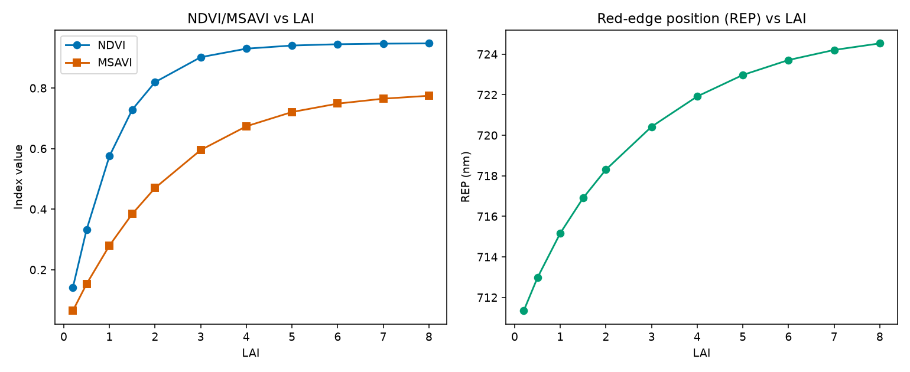

09. Spectral Indices
What you will learn
What a spectral index is, and why it’s still the simplest way to go from reflectance to a trait estimate.
The main conceptual families of index this package computes.
How index sensitivity to a trait (LAI here) saturates – and why that matters for retrieval.
Concept
A spectral index is a simple, fixed formula over a handful of bands (a
ratio, a normalized difference, …) built to track one trait while
staying relatively insensitive to everything else. get_indices()
computes ~75 VNIR + ~18 SWIR indices from one reflectance spectrum in a
single call, organized into a few conceptual families:
Category |
Example indices |
What they track |
|---|---|---|
Greenness / structure |
|
Green biomass / LAI – the oldest, most saturating-at-high-LAI family. |
Chlorophyll / pigments |
|
Chlorophyll content, using the red-edge (~700-750nm) where chlorophyll absorption saturates less than in the red. |
Red-edge position |
|
The wavelength of steepest reflectance rise (~700-740nm) – shifts with chlorophyll/canopy state. |
Vegetation water / SWIR / dry matter |
|
Formulas needing wavelengths only a SWIR-capable sensor
resolves – |
Python tools used
Function |
Key arguments |
|---|---|
|
Run the example
import numpy as np
from toolsrtm import foursail, get_indices
lai_vals = np.array([0.2, 0.5, 1, 1.5, 2, 3, 4, 5, 6, 7, 8])
wl = np.arange(400, 2501)
ndvi, msavi, rep = [], [], []
for lai in lai_vals:
lut = dict(N=1.5, Cab=40, Car=8, Anth=1, Cbrown=0, EWT=0.01, LMA=0.009, alpha=40,
LIDFa=-0.35, LIDFb=-0.15, TypeLidf=1, LAI=lai, hspot=0.01, tts=30, tto=0, psi=0)
sail = foursail(lut, np.full(2101, 0.15), leaf_model="PROSPECT-D", spectrum_all=True)
idx = get_indices(wl, sail.rsot, spectral_domain="VNIR")
ndvi.append(np.ravel(idx["NDVI"])[0])
msavi.append(np.ravel(idx["MSAVI"])[0])
rep.append(np.ravel(idx["REP"])[0])
print("NDVI:", np.round(ndvi, 4))
print("MSAVI:", np.round(msavi, 4))
print("REP (nm):", np.round(rep, 2))
Result
Printed output (exact, deterministic):
NDVI: [0.1417 0.3325 0.5749 0.7287 0.8195 0.9019 0.93 0.9404 0.9447 0.9465 0.9474]
MSAVI: [0.0647 0.153 0.2797 0.3843 0.47 0.5953 0.6736 0.7207 0.7485 0.7648 0.7745]
REP (nm): [711.35 712.97 715.17 716.9 718.31 720.42 721.92 722.98 723.71 724.21 724.53]
{kind=link}

Real output: NDVI (left, blue) rises steeply then flattens hard above LAI~4; MSAVI (left, orange) rises more gradually and keeps separating LAI values further into the high range; REP (right) shifts steadily but by a much smaller absolute amount across the whole LAI range.
Interpretation
NDVI moves from 0.14 (LAI=0.2, near-bare soil) to 0.90 (LAI=3) – most of its usable range is used up by LAI 3 – and then crawls from 0.90 to 0.947 across the entire remaining LAI 3-8 range. This is NDVI’s well-known saturation problem, visible here as real numbers rather than a textbook claim: once the canopy is closed enough that visible-light absorption is nearly complete, adding more leaf layers barely changes the red/NIR ratio NDVI is built from. MSAVI (soil-adjusted) saturates too, but less sharply – it keeps separating LAI 5 from LAI 8 more than NDVI does, which is exactly why soil-line-adjusted indices exist. REP moves only ~13nm across the whole LAI sweep (711 to 725nm) – a real, usable signal, but one that needs much finer spectral resolution to exploit than a broadband multispectral sensor like Sentinel-2 typically offers.
Try it yourself
Re-run the sweep varying
Cabinstead ofLAI(fixed LAI=3) and compare which index (NDVI vs. a chlorophyll index likeCI2) separatesCabvalues better.Convolve the same spectra onto Sentinel-2A bands first (08. Sensor Simulation) and recompute the indices on the convolved bands – check how much the values shift from the native- resolution ones above.
Compute a SWIR index (e.g.
N1645, needsspectral_domain="SWIR") across the same LAI sweep and compare its saturation behaviour to NDVI’s.
Common mistakes
spectral_domain="VNIR-SWIR"does not include VNIR-only indices like NDVI (an exact-match gate, not a superset) – usespectral_domain="VNIR"explicitly to get them.A SWIR-domain formula needing a wavelength your spectrum doesn’t cover (e.g. a sensor-convolved spectrum missing 1510nm) returns
NaNrather than an error – always worth checking after convolving onto a real sensor (08. Sensor Simulation).An index that saturates at high LAI doesn’t mean the underlying simulation is wrong – it’s the index’s own known limitation, the same behaviour real satellite NDVI shows over closed canopies.
Next
10. Sensitivity Analysis – which traits actually drive reflectance variance, at which wavelengths, quantified properly (rather than one trait swept at a time as above).
Using R? -> ToolsRTM Tutorial 09: Vegetation Indices